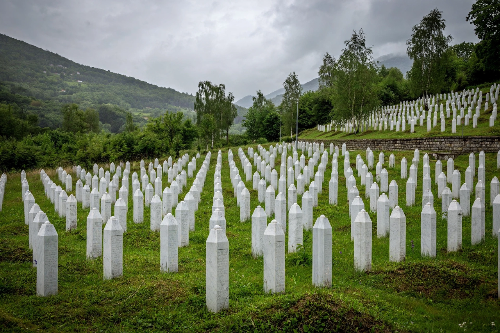

Srebrenica massacre

Srebrenica massacre
| Date | 11–31 July 1995 |
|---|---|
| Location | Srebrenica, Bosnia and Herzegovina |
| Perpetrators | Army of Republika Srpska (VRS), under Ratko Mladić |
| Victims | More than 8,000 Bosniak men and boys murdered |
| Classification | Genocide (ICTY and ICJ rulings) |
The Srebrenica massacre, also known as the Srebrenica genocide, was the July 1995 mass murder of more than 8,000 Bosniak Muslim men and boys in and around the town of Srebrenica in eastern Bosnia and Herzegovina during the Bosnian War. The killings were carried out by units of the Bosnian Serb Army of Republika Srpska (VRS) under the command of General Ratko Mladić, with the paramilitary Scorpions unit also participating. It was the first legally recognised genocide in Europe since the Second World War, and the worst mass killing on European soil since 1945.
Background
Srebrenica, a largely Bosniak enclave in Serb-held eastern Bosnia, had been declared a UN "safe area" in April 1993 and was protected on paper by a lightly armed Dutch battalion (Dutchbat) of UN peacekeepers. Tens of thousands of refugees swelled the enclave's population under siege conditions, with severe shortages of food and medicine. On 6 July 1995 the VRS launched an offensive against the enclave; NATO air support proved limited and belated, and Dutchbat was unable to resist.
The massacre
VRS forces entered Srebrenica on 11 July 1995. Up to 25,000 Bosniak civilians gathered at the UN compound at Potočari seeking protection. There, Serb forces separated men and boys from women, young children, and the elderly; the women and children were deported by bus to Bosnian government territory, while the men were detained. Separately, a column of some 10,000–15,000 Bosniak men attempted to break out through the hills toward Tuzla and was ambushed along the way. Over the following days, prisoners were executed at sites including warehouses at Kravica, the Branjevo military farm, and the Pilica cultural centre, and buried in mass graves — some later exhumed and reburied in secondary graves to conceal the crime.
Legal findings
The International Criminal Tribunal for the former Yugoslavia (ICTY) ruled in the Krstić case (2001, upheld on appeal in 2004) that the massacre constituted genocide, and the International Court of Justice reached the same conclusion in 2007, while finding Serbia not directly responsible but in breach of its obligation to prevent genocide. Radovan Karadžić (2016) and Ratko Mladić (2017) were convicted of genocide and sentenced to life imprisonment; Mladić's conviction was upheld on appeal in 2021. The Netherlands was found partially liable by Dutch courts for failing to protect some 350 men expelled from the Potočari compound. A Dutch government resigned in 2002 over an official report criticising the mission's mandate and execution.
Commemoration
Victims identified through DNA analysis by the International Commission on Missing Persons are buried each year on 11 July at the Srebrenica–Potočari Memorial and Cemetery, established in 2003. More than 6,600 victims have been interred there. Denial of the Srebrenica genocide remains a live political issue in the region; in 2024 the UN General Assembly designated 11 July as an international day of reflection and commemoration of the genocide.
See also: Bosnian War · Yugoslav Partisans · Ratko Mladić · Genocide